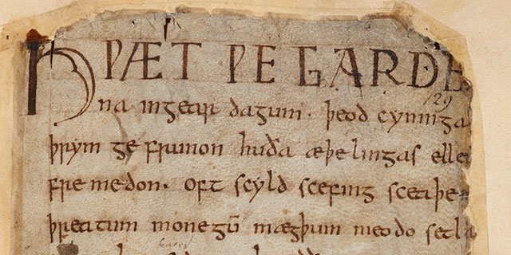
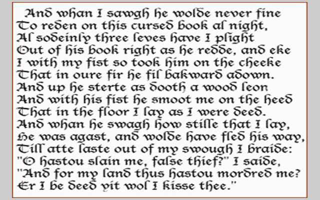
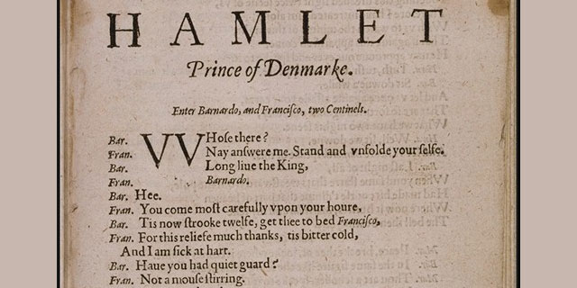

English is a West Germanic language that originated from Anglo-Frisian dialects brought to Britain in the mid 5th to 7th centuries AD by Anglo-Saxon migrants from what is now northwest Germany, southern Denmark and the Netherlands.
The Anglo-Saxons settled in the British Isles from the mid-5th century and came to dominate the bulk of southern Great Britain. Their language, now called Old English, originated as a group of Anglo-Frisian dialects which were spoken,
at least by the settlers, in England and southern and eastern Scotland in the early Middle Ages, displacing the Celtic languages (and, possibly, British Latin) that had previously been dominant. Old English reflected the varied origins
of the Anglo-Saxon kingdoms established in different parts of Britain. The Late West Saxon dialect eventually became dominant. A significant subsequent influence on the shaping of Old English came from contact with the North Germanic
languages spoken by the Scandinavian Vikings who conquered and colonized parts of Britain during the 8th and 9th centuries, which led to much lexical borrowing and grammatical simplification. The Anglian dialects had a greater influence
on Middle English.
The invading Germanic tribes spoke similar languages, which in Britain developed into what we now call Old English.
Old English did not sound or look like English today. Native English speakers now would have great difficulty
understanding Old English. Nevertheless, about half of the most commonly used words in Modern English have Old
English roots. The words be, strong and water, for example, derive from Old English. Old English was spoken until
around 1100.

An example of Middle English by Chaucer
In 1066 William the Conqueror, the Duke of Normandy (part of modern France), invaded and
conquered England. The new conquerors (called the Normans) brought with them a kind of
French, which became the language of the Royal Court, and the ruling and business classes.
For a period there was a kind of linguistic class division, where the lower classes spoke
English and the upper classes spoke French. In the 14th century English became dominant in
Britain again, but with many French words added. This language is called Middle English.
It was the language of the great poet Chaucer (c1340-1400), but it would still be difficult
for native English speakers to understand today.

An example of Middle English by Chaucer
Towards the end of Middle English, a sudden and distinct change in pronunciation (the Great Vowel Shift) started, with vowels being pronounced shorter and shorter.
From the 16th century the British had contact with many peoples from around the world.
This, and the Renaissance of Classical learning, meant that many new words and phrases entered the language .
The invention of printing also meant that there was now a common language in print. Books became cheaper and
more people learned to read.
Printing also brought standardization to English. Spelling and grammar became fixed, and the dialect of London,
where most publishing houses were, became the standard. In 1604 the first English dictionary was published.

Lines from Hamlet, written in Early Modern English by Shakespeare